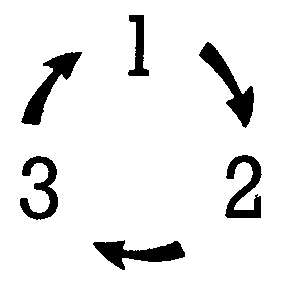

Klangprogrammierung ohne Ballast
Für viele C 64-Besitzer ist die Sound-Programmierung immer noch ein Buch mit sieben Siegeln. Wir zeigen hier, wie’s funktioniert — ohne theoretischen Ballast.
Der im C 64 eingebaute Sound-Chip 6581 sorgt immer wieder für neue klangliche Überraschungen, wie viele Spiele und Synthesizerprogramme zeigen. Für sich allein ist dieser Chip allerdings noch kein Synthesizer, sondern er entfaltet seine klanglichen Fähigkeiten erst unter der Kontrolle eines Programms. Wenn man nun selbst mit Klangeffekten und Melodien experimentieren will, hat man prinzipiell zwei Möglichkeiten:
Fertige Programme
Man verwendet eines der mittlerweile sehr guten Synthesizer- oder Musikprogramme. Mit diesen Programmen kann man meistens alle für den Klang relevanten Werte (Parameter) komfortabel einstellen. Darüber hinaus kann man bei einigen Programmen ganze Musikstücke Note für Note eingeben und ähnlich wie bei einem Textprogramm editieren. Ein so erarbeitetes Werk kann man dann zwar samt Klang-Parametersatz auf Diskette abspeichern und wieder laden, man kann diese Melodien und Klänge normalerweise aber nicht in eigene Programme einbauen. In dem Kurs »Dem Klang auf der Spur«, die seit einiger Zeit im 64’er-Magazin erscheint, wird ein solches Programm Schritt für Schritt aufgebaut. Dieses Programm wird in seiner endgültigen Ausbaustufe den zuletzt genannten Nachteil nicht haben.
Selber programmieren
Wenn man in einem eigenen Programm nur einen Signalton (zum Beispiel einen Gong) oder einen anderen einfachen Klangeffekt benötigt, kann man ihn mit einigen POKE-Befehlen leicht selber programmieren. Dieser Artikel soll demjenigen, der sich nur am Rande mit der Klangprogrammierung beschäftigen will, zeigen, wie es geht.
Der erste Schritt
Man führe einmal folgende Befehlsfolge direkt am Bildschirm aus:
| Lautstärke einstellen: | POKE 54296,15 |
| Frequenz einstellen: | POKE 54272,0 POKE 54273,40 |
| Hüllkurve wählen: | POKE 64277,0 POKE 54278,240 |
| Ton an: | POKE 54276,33 |
| Ton aus: | POKE 54276,32 |
Nach dem vorletzten Befehl sollte ein Dauerton hörbar werden, der nach dem letzten Befehl wieder verschwindet. Der SID (Sound Interface Device) wird über sogenannte Register programmiert. Diese Register belegen 29 Byte Speicherplatz im C 64 und zwar den Bereich 54272 bis 54300 (hexadezimal $D400 bis $D41C). Über den Inhalt dieser Register werden alle Funktionen des SID gesteuert (Tabelle 1). Der SID verfügt über drei voneinander unabhängige Stimmen, die jeweils durch sieben Register gesteuert werden. Wir befassen uns zunächst mit Stimme 1:
Frequenz (Register 54272 und 54273)
Diese beiden Register enthalten zusammen einen 16-Wert in der Folge Low-Byte, High-Byte. Man kann ihn wie folgt ermitteln:
F=PEEK(54272) + 256*PEEK(54273)
Wenn man F durch 17,0284 dividiert, erhält man die tatsächliche Frequenz in Hz. Normalerweise möchte man aber Stimme 1 auf eine vorgegebene Frequenz programmieren, zum Beispiel 440 Hz. Den Wert F erhält man dann so:
F = 440*17.0284
Diesen Wert zerlegt man in ein höher- und ein niederwertiges Byte (Low- und High-Byte) und POKEt diese in die beiden Frequenz-Register:
HI = INT(F/256)
LO = F-256*HI
POKE 54272,LO
POKE 54273,HI
Tabelle 2 enthält die Frequenzen der 12 Halbtöne einer Tonleiter zusammen mit den zugehörigen POKE-Werten. Um zu höheren oder tieferen Oktaven zu gelangen, muß man die Frequenzen lediglich verdoppeln (vervierfachen etc.) beziehungsweise halbieren (vierteln etc.). Die POKE-Werte müssen dann natürlich neu berechnet werden. Werden diese Frequenzen in einem Programm verwendet, so sollten die POKE-Werte aller benötigten Töne in zwei Feldern (einem für die Low-und einem für die High-Bytes) abgespeichert sein, damit das Programm keine Zeit mit der Berechnung dieser Werte verliert.
| Note | Frequenz | SID-Low-Byte | SID-High-Byte |
| c1 | 261,63 | 103 | 17 |
| cis1 | 277,18 | 112 | 18 |
| d1 | 293,66 | 137 | 19 |
| dis1 | 311,13 | 178 | 20 |
| e1 | 329,63 | 237 | 21 |
| f1 | 349,23 | 59 | 23 |
| fis1 | 369,99 | 156 | 24 |
| g1 | 392,00 | 19 | 26 |
| gis1 | 415,30 | 160 | 27 |
| a1 | 440,00 | 68 | 29 |
| ais1 | 466,16 | 2 | 31 |
| h1 | 493,88 | 218 | 32 |
Dieses kleine Programm liefert die Tabelle:
10 FOR I = 0 TO 11
20 : F = 440*(2^((I-9)/12))
30 : FS = INT(F*17.0284 + .5)
40 : HI = INT(FS/256)
50 : LO = FS - 256*HI
60 : PRINT F, LO, HI
70 : NEXT I
Das Steuerregister 54276
Über dieses Register wird der Ton ein- und ausgeschaltet. Man sollte vielleicht besser sagen: »angeschlagen« und »losgelassen«, da über die Hüllkurvensteuerung eine dynamische Beeinflussung der Lautstärke möglich ist. Darauf kommen wir später noch zurück. Im Steuerregister ist für das Ein- und Ausschalten Bit 0, das sogenannte GATE-Bit verantwortlich. Eine 1 im GATE-Bit schaltet die Stimme ein. Das Steuerregister legt auch die Kurvenform fest, die für das Klangbild der Stimme entscheidend ist. Eine Kurvenform wird ausgewählt, indem man eines der Bits 4 bis 7 setzt. Hier zunächst eine Tabelle mit den wichtigsten POKE-Werten für das Steuerregister:
| Kurvenform | Bit | Ton an | Ton aus |
| Dreieck | 4 | 17 | 16 |
| Sägezahn | 5 | 33 | 32 |
| Rechteck | 6 | 65 | 64 |
| Rauschen | 7 | 129 | 128 |
Die Werte sollte man gleich einmal ausprobieren. Um einen Rechteckklang zu erzeugen, sind allerdings noch weitere Maßnahmen notwendig (siehe unten). Das Dreieck klingt weich, dumpf und leiser als die anderen Kurvenformen. Es eignet sich für flötenähnliche Töne, aber auch für einen dezenten Signal-Gong. Der Sägezahn hat einen großen Obertongehalt und klingt damit sehr hell. Sägezahn ist die Standard-Kurvenform für die meisten musikalischen Anwendungen. Um eine Rechteck-Kurve zum Klingen zu bringen, muß man im SID zusätzlich die sogenannte Pulsweite einstellen. Dieser Wert steuert das Zeitverhältnis der beiden Pegel, zwischen denen die Rechteck-Kurve hin- und herspringt. Die Register 54274 und 54275 (Low- und High-Byte) sind für die Pulsweite maßgeblich. Es werden allerdings nur 12 Bit berücksichtigt, was einem Bereich von 0 bis 4095 entspricht. Der Wert 2048 (Bereichsmitte) entspricht dabei einer symmetrischen Rechteckkurve, das heißt einer mit einem Zeitverhältnis 1:1. Diese Einstellung erreicht man durch:
POKE 54274,0 :REM LOW-BYTE
POKE 54275,8 :REM HIGH-BYTE
Jetzt sollte nach:
POKE 54276,65
ein Rechteckton hörbar sein. Das Rechteck klingt im Vergleich zum Sägezahn hohl und erinnert daher ein wenig an eine Klarinette. Über die Pulsweitensteuerung ist das Klangbild des Rechtecks allerdings sehr variabel.
Klangvielfalt durch Hüllkurven
Töne natürlicher Instrumente haben selten einen konstanten Lautstärkeverlauf, wenn man einmal von der Orgel absieht. Töne von Blasinstrumenten brauchen eine gewisse Zeit, bis sie vom Ansatz zur vollen Lautstärke anschwellen. Ein angeschlagener Klavierton setzt zwar unmittelbar ein, aber klingt dann beim Halten der Taste erst schnell und dann langsamer aus. Auch beim Loslassen der Taste reißt der Ton nicht schlagartig ab, sondern verklingt innerhalb einiger Sekundenbruchteile. Diese Dynamik kann man auch mit dem SID erzeugen. Sobald das GATE-Bit im Kontrollregister gesetzt ist, folgt die Lautstärke der Stimme einer Kurve, deren Verlauf durch die Register 54277 und 54278 gesteuert wird. In dem Beispiel »Der erste Schritt« wurde eine einfache rechteckförmige Hüllkurve eingestellt (Orgelcharakter). Vor dem systematischen Teil zunächst einige Experimente:
Man führe die POKEs aus »Der erste Schritt« aus, damit die Befehle alle zusammen auf dem Bildschirm stehen. Nun kann man die POKEs für die Hüllkurve ändern und sich den Effekt über »Ton an« und »Ton aus« anhören:
- Längeres Ausklingen:
POKE 54278,250 - Klavierartiger Anschlag:
POKE 54277,6
POKE 54278,250 - Anschwellen wie bei Bläsern:
POKE 54277,96
POKE 54278,247
A D S R — Hüllkurven
Die SID-Hüllkurve (Bild 1) gliedert sich zeitlich in vier Phasen. Jede Phase kann dabei unabhängig in 16 Stufen gesteuert werden.
Attack
Beim Setzen des GATE-Bits schwillt der Ton von Null bis zur maximalen Lautstärke an. Die Zeit, in der das geschieht, steuert der A-Parameter. Diese Zeit reicht von 2 ms (A = 0, unhörbar kurz) bis 8 s (A = 15).
Decay
Nach Erreichen des Maximalpegels fällt die Lautstärke wieder ab, sofern ein Haltepegel (Sustain) kleiner als 15 eingestellt ist. Die Decay-Zeit wird über den D-Parameter gesteuert. Sie reicht von 6 ms (D = 0) bis 24 s (D = 15).
Sustain
Nach der Decay-Phase bleibt der Ton auf einem konstanten Haltepegel (Sustain) stehen. Im Falle S=15 (Maximalpegel) kann von einer Decay-Phase nicht gesprochen werden. In diesem Fall steigt die Lautstärke in der Attack-Phase auf Maximalpegel um dort zu bleiben. Im Falle S=0 klingt der Ton in der Decay-Phase vollständig aus. (das heißt bis auf Null).
Release
Die Sustain-Phase dauert so lange, wie das GATE-Bit gesetzt ist. (Auf diese Weise kann man einen Dauerton erzeugen). Durch das Rücksetzen des GATE-Bit wird die Release-Phase eingeleitet. Der Ton klingt vom momentanen Pegel (falls dieser nicht schon Null ist) auf Null aus. Diese Ausklingzeit ist durch den R-Parameter im Bereich 6 ms (R = 0) bis 24 s (R = 15) steuerbar. Die Release-Phase kann übrigens jederzeit durch Zurücksetzen des GATE-Bits eingeleitet werden, auch wenn sich die Hüllkurve noch in der Attack-, oder der Decay-Phase befindet. Der Ton klingt dann sofort vom momentanen Pegel in der eingestellten Zeit auf Null ab. Man spricht dann auch von einer ADR- oder einer AR-Hüllkurve.
Die Hüllkurvenregister 54277 und 54278
Jedes dieser Register muß man sich in zwei 4-Bit-Hälften aufgeteilt denken, von denen jede einen der Parameter enthält:
| Parameter | Bits | Register |
| A | 7-4 | 54277 |
| D | 3-0 | 54277 |
| S | 7-4 | 54278 |
| R | 3-0 | 54278 |
Die Parameter A und D beziehungsweise S und R können immer nur zusammen in ihre Register geschrieben werden. Die Parameterwerte auf den Bitpositionen 3-0 kann man dabei direkt übernehmen, während man die Werte auf den Positionen 7-4 um vier Bitpositionen nach links schreiben muß, was man in Basic durch Multiplikation mit 16 erreicht:
POKE 54277, 16*A + D
POKE 54278, 16*S + R
Tabelle 3 zeigt einige Beispiel-Hüllkurven mit den dazugehörenden POKE-Werten. Auch diese Hüllkurven sollte man einmal ausprobieren. Damit sind die wichtigsten Register, die für die Erzeugung einfacher Klänge benötigt werden, bekannt. Die Steuerung der Stimmen 2 und 3 erfolgt analog zu Stimme 1 über je sieben Register.
| Stimme | 1 | 2 | 3 |
| Frequenz | 54272 54273 |
54279 54280 |
54286 54287 |
| Pulsweite | 54274 54275 |
54281 54282 |
54288 54289 |
| Steuerregister | 54276 | 54283 | 54290 |
| AD | 54277 | 54284 | 54291 |
| SR | 54278 | 54285 | 54292 |
Spezialeffekte
Wir wenden uns nun den Spezialeffekten zu. Dazu gehören Synchronisation, Ringmodulation und Filterung. Wir betreten damit bereits das Gebiet der fortgeschrittenen Sound-Programmierung. Notgedrungen wird es auch etwas komplizierter.
Synchronisation
Wenn man Bit 1 des Steuerregisters von Stimme 1 setzt, wird das Ausgangssignal von Stimme 1 durch das Signal von Stimme 3 synchronisiert, das heißt phasenstarr gekoppelt. Resultat ist ein mit Worten schwer zu beschreibender, in hohem Maße »elektronischer« Klang. Auch die Stimmen 2 und 3 lassen sich durch Setzen von Bit 1 der jeweiligen Steuerregister synchronisieren. Dabei wird Stimme 2 von Stimme 1 synchronisiert und synchronisiert ihrerseits Stimme 3.
Ringmodulation
Durch Setzen von Bit 2 des Steuerregisters von Stimme 1 entsteht ein Ringmodulator-Produkt der Dreieckskurven der Stimmen 1 und 3. Hörbar wird es nur dann, wenn Stimme 1 zusätzlich auf Dreieck eingestellt ist (Bit 4 gesetzt). Bei der Ringmodulation werden zwei Signale multiplikativ überlagert. Das Resultat sind meistens metallische Klänge, die sich für Glocken und Gongs eignen. Auch die Ringmodulation ist in jeder Stimme möglich. Wie bei der Synchronisation modulieren sich die Stimmen nach dem Schema:
Mehrere Kurvenformen gleichzeitig
Weitere Kurvenformen kann man noch dadurch erhalten, in dem man von der Kurvenform Bit 4 bis 7 mehrere zugleich setzt. Dabei werden allerdings nicht mehrere Formen zugleich hörbar, sondern es entstehen neue Kurvenformen. Erfahrungsgemäß bringen nur die Kombinationen:
Rechteck — Sägezahn (Bit 6 und 5) sowie:
Rechteck — Dreieck (Bit 6 und 4)
brauchbare Resultate. Bei diesen Kombinationen hat auch die Pulsweiteneinstellung einen Einfluß auf den Klang.
Setzen und Rücksetzen einzelner Bits
Bei der Programmierung des Steuerregisters will man oft einzelne Bits setzen oder zurücksetzen, ohne daß man dabei die anderen Bits verändern möchte. Diese Aufgabe erledigt man am besten mit Hilfe zweier Sätze von jeweils acht sogenannten »Masken«. Der erste Satz besteht aus Bytes, bei denen immer genau ein Bit gesetzt ist, der zweite besteht aus Bytes, bei denen immer genau ein Byte 0 ist. Diese 16 Masken kann man sich wie folgt definieren:
| Basic | Assembler | |
| DIM ON%(7),OF%(7) FORI = 0 TO 7:ON%(I)=2↑I:OF%(I)=255-2↑I NEXT I |
ON | .BYT %00000001 |
| .BYT %00000010 | ||
| .BYT %00000100 | ||
| .BYT %00001000 | ||
| .BYT %00010000 | ||
| .BYT %00100000 | ||
| .BYT %01000000 | ||
| .BYT %10000000 | ||
| OF | .BYT %11111110 | |
| .BYT %11111101 | ||
| .BYT %11111011 | ||
| .BYT %11110111 | ||
| .BYT %11101111 | ||
| .BYT %10111111 | ||
| .BYT %01111111 | ||
Nun kann man Bit N im Steuerregister sehr einfach setzen:
| Basic | Assembler |
| SR = 54276 POKE SR, PEEK(SR) OR ON%(N) |
LDX N LDA $D404 ORA ON,X STA $D404 |
Das Löschen von Bit N geschieht ganz ähnlich:
| Basic | Assembler |
| SR = 54276 POKE SR, PEEK(SR) AND OF%(N) |
LDX N LDA $D404 AND OF,X STA $D404 |
Filterung
Das im SID vorhandene Filter ist vergleichbar mit dem Klangregler einer Audio-Anlage. Gegenüber dem bekannten Einstellsystem für Höhen und Bässe bestehen aber auch Unterschiede. Beim SID-Filter ist eine Grenzfrequenz einstellbar, oberhalb oder unterhalb der eine Absenkung der Frequenzanteile des zu filternden Signals erfolgen soll. Das Filter kennt drei Betriebsarten:
Tiefpaß
Nur Frequenzanteile unterhalb der Grenzfrequenz werden durchgelassen. Anteile oberhalb der Grenzfrequenz werden mit zunehmendem Abstand von dieser zunehmend unterdrückt.
Hochpaß
Frequenzanteile oberhalb der Grenzfrequenz werden durchgelassen. Anteile unterhalb der Grenzfrequenz werden unterdrückt. Die Hochpaß-Betriebsart erzeugt beim SID meistens einen leisen dünnen Klang.
Bandpaß
Es werden nur die Frequenzanteile in der Umgebung der Mittenfrequenz (»Grenzfrequenz« wäre hier unzutreffend) durchgelassen. Darüber hinaus kann man die Filterbetriebsarten auch kombinieren. Ein Beispiel dafür ist die
Bandsperre
Diesen Modus erhält man, wenn man die Betriebsarten Hochpaß und Tiefpaß zugleich anwählt. Es werden Frequenzen in der Umgebung der Mittenfrequenz abgeschwächt. Eingestellt werden die Filterbetriebsarten durch die Bits 6, 5 und 4 des Registers 54296, dem gleichen Register, mit dem auch die Gesamtlautstärke des SID gesteuert wird (Bits 3 bis 0)
- Bit 6 = 1 Hochpaß
- Bit 5 = 1 Bandpaß
- Bit 4 = 1 Tiefpaß
Über die Bits 2 bis 0 des Registers 54295 kann man steuern, welche der einzelnen Stimmen gefiltert werden sollen. Eine 1 bedeutet dabei Filterung.
- Bit 0 entspricht Stimme 1
- Bit 1 entspricht Stimme 2
- Bit 2 entspricht Stimme 3
Eine 0 besagt, daß die Stimme ungefiltert an den Ausgang gelangen soll.
Die Bits 4 bis 7 des gleichen Registers 54295 enthalten einen 4-Bit-Wert, über den man die Resonanz des Filters (in der Elektrotechnik auch »Güte« genannt) steuern kann. Eine hohe Resonanz (der Maximalwert ist 15) bewirkt eine zusätzliche Verstärkung der Frequenzanteile in der Nähe der Grenz- beziehungsweise Mittenfrequenz. Diese Verstärkung kann beim SID auch zu klanglich interessanten Verzerrungen führen (E-Gitarre). Unerwähnt ist bis hierher die Einstellung der Grenz- beziehungsweise Mittenfrequenz geblieben. Sie wird über das Register 54294 eingestellt (volle 8 Bit). Es besteht zudem die Möglichkeit einer Feineinstellung über die Bits 0-2 des Registers 54293. Eine solche Feineinstellung bleibt aber erfahrungsgemäß unhörbar. Man kann also Register 54293 getrost unberücksichtigt lassen.
Eine kleine Anleitung zum Experimentieren mit dem Filter
Man stelle Stimme 1 auf Dauerton ein (zum Beispiel mit der POKE-Folge ganz am Anfang dieses Artikels). Man fahre so fort:
- Tiefpaßeinstellung, Lautstärke = 15: POKE 54296,31
- Resonanz=15, Stimme 1 über das Filter schicken: POKE 54295,241
Jetzt ist vermutlich nichts mehr oder kaum noch etwas zu hören, weil die Grenzfrequenz mit 0 voreingestellt ist. Mit der Grenzfrequenz kann man jetzt experimentieren:
POKE 54294,20 (40,60,80…)
Das Klangbild von Stimme 1 müßte jetzt zunehmend heller werden. Zum Abschluß folgen in Tabelle 4 noch einige Einstellbeispiele für Stimme 1. Die Einstellungen, bei denen das Filter benutzt wird, sind mit Vorsicht zu genießen, da Filtereinstellungen schlecht reproduzierbar sind. In diesem Punkt weisen die einzelnen SID-Bausteine beachtliche Streuungen auf.
| F high | PW low | PW high | Steuer-reg. | AD | SR | F | Filter Resonanz | Modus/Laut | |
| 54273 | 54274 | 54275 | 54276 | 54277 | 54278 | 54294 | 54295 | 54296 | |
| Signalton | 60 | X | X | 17/16 | 10 | 10 | X | 0 | 15 |
| Klarinette | 20 | 0 | 8 | 65/64 | 106 | 135 | X | 0 | 15 |
| Flöte | 40 | X | X | 17/16 | 128 | 248 | X | 0 | 15 |
| Oboe/Fagott | 30/10 | 250 | 0 | 65/64 | 73 | 248 | X | 0 | 15 |
| Schnarre | 5 | 0 | 8 | 81/80 | 73 | 248 | X | 0 | 11 |
| Banjo | 30 | X | X | 32/32 | 8 | 8 | 50 | 241 | 11 |
| Schuß | 200 | X | X | 129/128 | 9 | 9 | X | 0 | 15 |
| Explosion | 1 | X | X | 129/128 | 13 | 93 | 20 | 241 | 31 |
Wer sich weitergehend mit der Klang- und Musikprogrammierung beschäftigen will, der sei auf die schon erwähnte Reihe »Dem Klang auf der Spur« verwiesen. In Ausgabe 2/85 des 64’er-Magazins findet man mehrere kleine Beispielprogramme zur SID-Programmierung. In Ausgabe 7/85 wird ein größeres Programm beschrieben, mit dem man unter anderem alle Parameter des SID interaktiv und komfortabel beeinflussen kann. In Ausgabe 10/85 wird ein Sequenzer-Programm erscheinen, das dreistimmige Melodien zeitexakt spielen kann, während nebenbei auch noch ein anderes Programm läuft.
(Thomas Krätzig/ev)